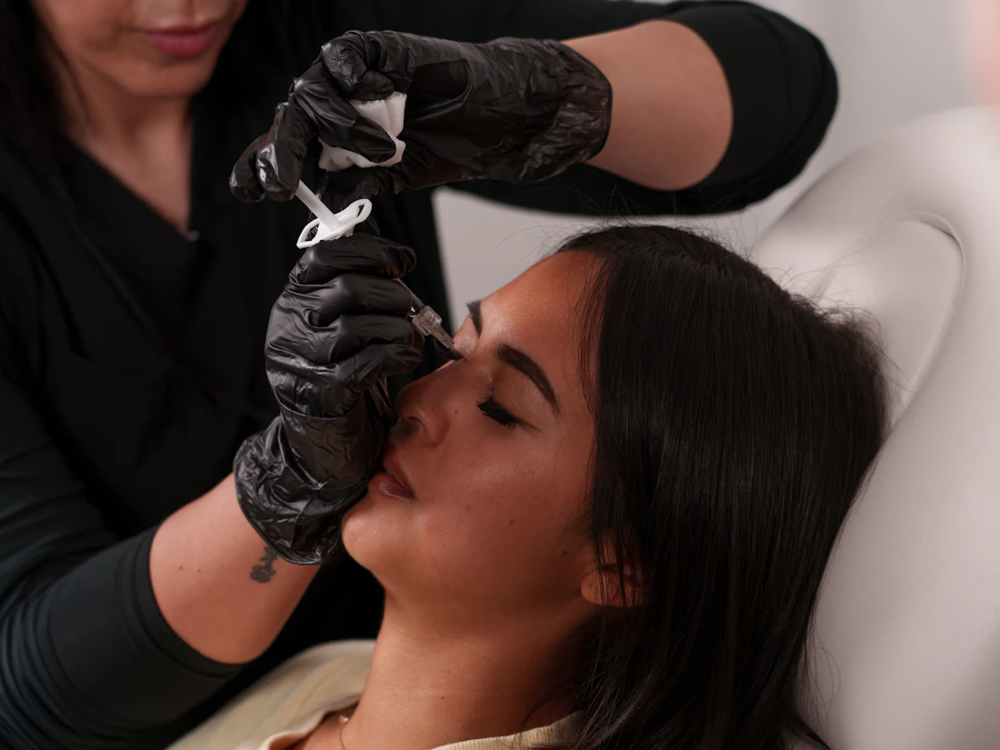

Um estúdio pequeno, de propósito.
Atendemos com hora marcada, uma cliente por vez em cada sala. É assim que dá para ouvir, explicar e caprichar.


Começou com uma cadeira e uma pinça.
A Camila Arruda fazia sobrancelhas para amigas no apartamento dela, em 2018. A lista de espera cresceu tanto que, um ano depois, nasceu o Arco: um espaço pensado para quem quer resultado natural e atendimento sem correria.
Hoje somos três especialistas em sobrancelha e uma biomédica responsável pelo laser, todas com formação e atualização constante.
- Camila ArrudaFundadora · design e micropigmentação
- Dra. Fernanda LimaBiomédica esteta · laser e pele
Três combinados com cada cliente.
Biossegurança
Instrumentos esterilizados em autoclave, descartáveis abertos na sua frente e salas higienizadas a cada atendimento.
Você aprova antes
Desenhamos, mostramos no espelho e ajustamos com você. Nenhum fio sai sem o seu ok.
Pontualidade
Seu horário é respeitado. Confirmamos um dia antes e avisamos se houver qualquer imprevisto.
Antes de marcar.
Preciso deixar a sobrancelha crescer antes do design?
O ideal é ficar de 2 a 3 semanas sem tirar nenhum fio. Assim conseguimos desenhar o formato completo e corrigir falhas.
Depilação a laser dói?
A maioria das clientes descreve como um leve beliscão. Nosso aparelho tem ponteira resfriada, que deixa a sessão bem mais confortável.
Quantas sessões de laser vou precisar?
Em média de 6 a 8, com intervalo de 30 a 45 dias. O número exato depende da área, do tipo de pelo e da sua pele, e é definido na avaliação gratuita.
Posso fazer laser em pele negra ou bronzeada?
Sim. O laser de diodo permite ajustar os parâmetros para todos os fototipos. Em pele bronzeada recente, pedimos para aguardar alguns dias por segurança.
Quanto tempo dura a micropigmentação?
De 1 a 2 anos, dependendo do tipo de pele e dos cuidados com o sol. O retoque de 30 dias já está incluso no valor.
Quais formas de pagamento vocês aceitam?
Pix, débito e crédito. Pacotes de laser podem ser parcelados em até 6x sem juros.
E se eu precisar remarcar?
Sem problema. Pedimos apenas que avise com pelo menos 12 horas de antecedência pelo WhatsApp.

Venha conhecer o Arco.
Tire suas dúvidas pelo WhatsApp ou escolha um horário direto pelo site.